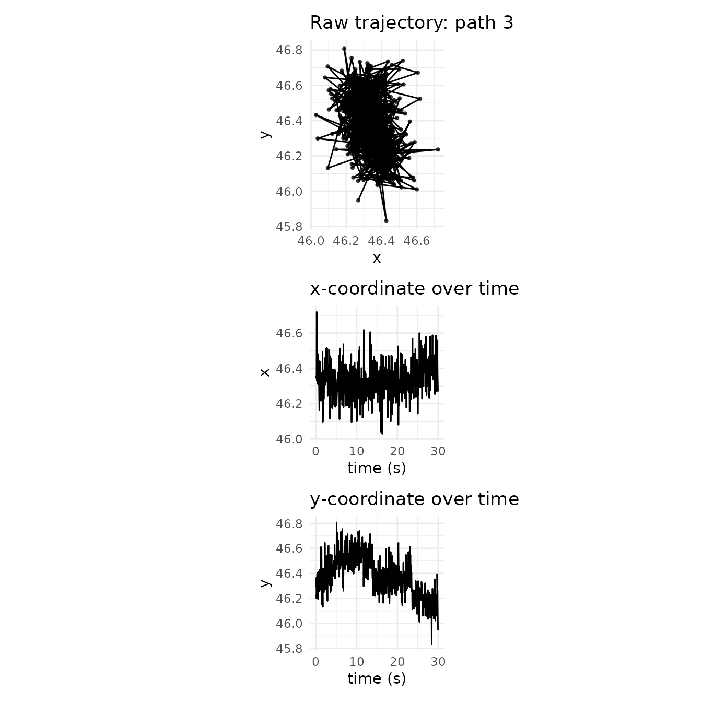
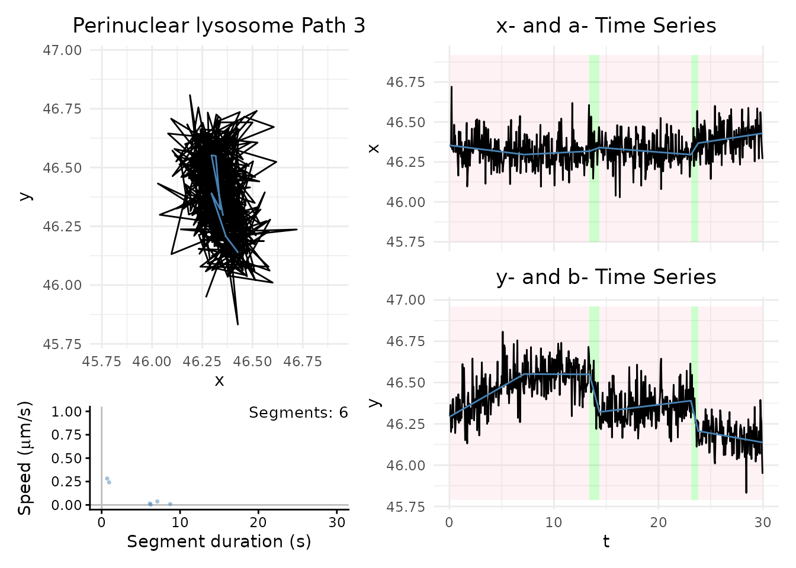
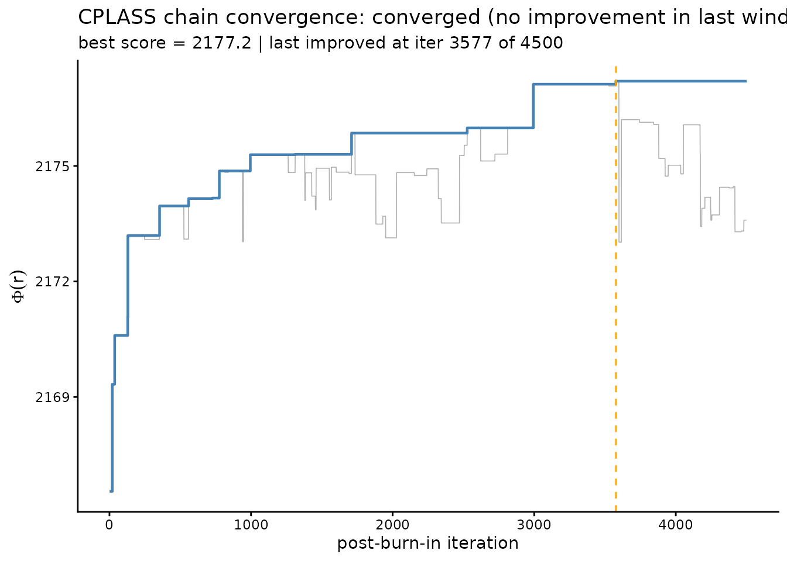
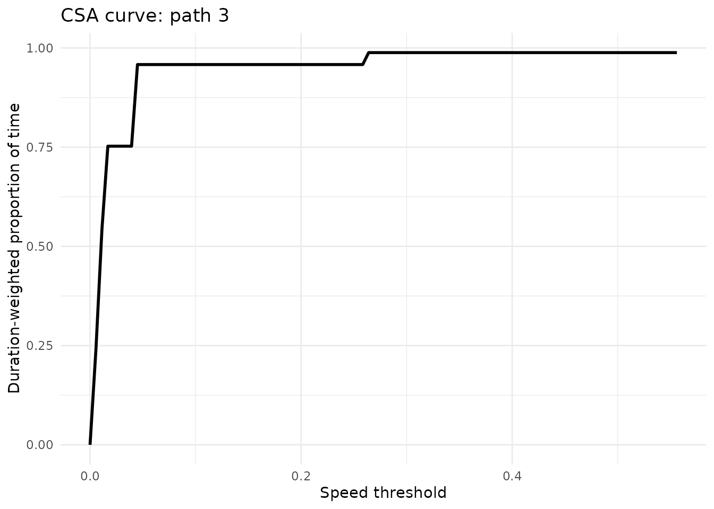

Getting started with CPLASS
Linh Do
Scott A. McKinley
2026-07-10
Source:vignettes/cplass_example.Rmd
cplass_example.RmdOverview
CPLASS (Continuous Piecewise-Linear Approximation via Stochastic Search) detects changes in velocity within multidimensional particle trajectories. Unlike traditional changepoint methods that target changes in mean, CPLASS models a continuous piecewise-linear anchor trajectory and searches the space of changepoint configurations with a tailored Metropolis-Hastings sampler. See Do et al. (2026), Change-in-velocity detection in multidimensional data, for the full statistical model and simulation studies behind the method.
This vignette walks through:
- loading the package and an example trajectory data set;
- running CPLASS on a single path;
- visualizing the inferred continuous piecewise-linear anchor path;
- checking whether the search has stabilized, and running multiple independent starts for a more reliable fit;
- summarizing a fitted trajectory with the Cumulative Speed Allocation (CSA); and
- running CPLASS on a small collection of paths at once.
CPLASS is a stochastic search for the configuration that maximizes a penalized criterion, not a Bayesian sampler in the usual sense. So “convergence” below always means optimization has stabilized (no better configuration is being found), not that a Markov chain has reached a stationary posterior distribution.
2. Load the example trajectory data
The package ships a small example data set of lysosome trajectories, collected in the peripheral region of cells (Rayens et al. 2022). Each row is the position of one tracked particle at one observed time point.
| Column | Description |
|---|---|
index_path |
Trajectory identifier |
t |
Observed time, in seconds |
x |
x-position of the particle (m) |
y |
y-position of the particle (m) |
data_file <- system.file("extdata", "Real_21_Periphery.csv", package = "cplass")
traj_data <- read.csv(data_file)
str(traj_data)## 'data.frame': 114724 obs. of 4 variables:
## $ t : num 0.05 0.1 0.15 0.2 0.25 0.3 0.35 0.4 0.45 0.5 ...
## $ x : num 3.37 3.39 3.32 3.27 3.4 ...
## $ y : num 44.4 44.5 44.4 44.3 44.4 ...
## $ index_path: int 1 1 1 1 1 1 1 1 1 1 ...Number of observations per path:
path_summary <- traj_data |>
group_by(index_path) |>
summarise(
n_obs = n(),
duration = max(t) - min(t),
.groups = "drop"
)
head(path_summary)## # A tibble: 6 × 3
## index_path n_obs duration
## <int> <int> <dbl>
## 1 1 599 29.9
## 2 2 599 29.9
## 3 3 596 29.9
## 4 4 599 29.9
## 5 5 599 29.9
## 6 6 599 29.93. Inspect one trajectory
We use index_path == 3 as the running example.
path_id <- 3
path <- traj_data |> filter(index_path == path_id)
t <- path$t
x <- path$x
y <- path$y
p_xy <- ggplot(path, aes(x = x, y = y)) +
geom_path() +
geom_point(size = 0.8, alpha = 0.7) +
coord_equal() +
theme_minimal() +
labs(title = paste("Raw trajectory: path", path_id), x = "x", y = "y")
p_xt <- ggplot(path, aes(x = t, y = x)) +
geom_line() +
theme_minimal() +
labs(title = "x-coordinate over time", x = "time (s)", y = "x")
p_yt <- ggplot(path, aes(x = t, y = y)) +
geom_line() +
theme_minimal() +
labs(title = "y-coordinate over time", x = "time (s)", y = "y")
p_xy / p_xt / p_yt
4. Run CPLASS on a single path
The main inputs are the observed time vector t and the
coordinate vectors x, y. Useful tuning
parameters:
-
iter_max– total number of stochastic-search iterations. -
burn_in– initial iterations discarded before selecting the best configuration. -
s_cap– speed above which the (optional) speed penalty is applied. -
speed_pen– whether to use the speed penalty (Section 2.3 of the paper). -
gamma– exponent in the strengthened SIC penalty (paper recommends 1.01). -
pen– penalty choice:"ssic","aicc", or"hybrid". -
patience– if set, stop early once the criterion hasn’t improved for this many iterations (see?CPLASS).
fit_single <- CPLASS(
t, x, y,
iter_max = 5000,
burn_in = 500,
s_cap = 1,
gamma = 1.01,
speed_pen = TRUE,
pen = "ssic",
show_progress = FALSE
)The fit is a list with a tibble of inferred segments and the reconstructed anchor path:
names(fit_single)## [1] "segments_inferred" "path_inferred" "best_score"
## [4] "stopped_early" "iterations_used"
fit_single$segments_inferred## # A tibble: 6 × 7
## cp_times durations states speeds vx vy angles
## <dbl> <dbl> <int> <dbl> <dbl> <dbl> <dbl>
## 1 7.15 7.1 0 0.0371 -0.00812 0.0362 1.79
## 2 13.4 6.25 0 0.00341 0.00339 -0.000392 -0.115
## 3 14.4 0.950 1 0.241 0.0241 -0.240 -1.47
## 4 23.1 8.75 0 0.00934 -0.00509 0.00783 2.15
## 5 23.8 0.700 1 0.282 0.103 -0.262 -1.20
## 6 30.0 6.15 0 0.0150 0.00994 -0.0112 -0.845
fit_single$segments_inferred |>
summarise(
n_segments = n(),
total_duration = sum(durations),
mean_speed = mean(speeds),
max_speed = max(speeds),
prop_motile_time = sum(durations[states == 1]) / sum(durations)
)## # A tibble: 1 × 5
## n_segments total_duration mean_speed max_speed prop_motile_time
## <int> <dbl> <dbl> <dbl> <dbl>
## 1 6 29.9 0.0979 0.282 0.05525. Visualize the fit
The black line is the observed trajectory; the blue line is the inferred continuous piecewise-linear anchor path. Shaded regions mark stationary vs. motile segments using the default speed cutoff of 0.1 m/s.
max_speed <- ceiling(max(fit_single$segments_inferred$speeds))
plot_path_inferred(
fit_single,
motor = "Perinuclear lysosome",
max_speed = max_speed,
t_lim = c(0, ceiling(max(t) - min(t))),
path_index = path_id
)
6. Has the search stabilized?
check_convergence() re-runs CPLASS with its diagnostic
trace enabled and checks how long it has been since the running-maximum
criterion score last improved. This is useful for sizing
iter_max for trajectories of a given length – see Figure 4
of the companion paper for why a naive gradient-based stopping rule is
not reliable here.
conv <- check_convergence(t, x, y, iter_max = 5000, burn_in = 500, show_progress = FALSE)
conv$converged## [1] TRUE
conv$best_score## [1] 2177.202
conv$last_improvement_iter## [1] 3577
plot_convergence(conv)
7. Multiple independent starts
The penalized criterion can have several local maxima (Figure 4 of
the paper). CPLASS_multistart() runs several independent
chains and keeps the one with the highest criterion score, using
patience-based early stopping by default so the extra starts don’t cost
a full iter_max each.
ms <- CPLASS_multistart(
t, x, y,
iter_max = 5000,
burn_in = 500,
n_starts = 5,
n_cores = 1,
show_progress = FALSE
)
ms$all_scores## [1] 2172.033 2178.168 2176.785 2169.223 2171.704
ms$score_spread## [1] 8.945725A small score_spread means the starts agree on
(approximately) the same optimum. Use the winning run for downstream
analysis:
fit_best <- ms$best
fit_best$segments_inferred## # A tibble: 6 × 7
## cp_times durations states speeds vx vy angles
## <dbl> <dbl> <int> <dbl> <dbl> <dbl> <dbl>
## 1 6.2 6.15 0 0.0416 -0.00935 0.0406 1.80
## 2 13.4 7.25 0 0.00361 0.00230 0.00278 0.878
## 3 14.4 0.9 1 0.261 0.0260 -0.259 -1.47
## 4 23.3 8.95 0 0.00904 -0.00469 0.00773 2.12
## 5 23.6 0.350 1 0.556 0.193 -0.521 -1.22
## 6 30.0 6.3 0 0.0152 0.0104 -0.0111 -0.8218. Cumulative Speed Allocation (CSA)
The CSA is a duration-weighted empirical distribution of inferred segment speeds (Cook et al. 2025): for each speed threshold, the proportion of time the particle spent moving slower than that threshold. It summarizes an entire trajectory’s speed profile without an arbitrary motile/stationary cutoff.
speed_mesh <- seq(0, max(fit_best$segments_inferred$speeds), length.out = 100)
csa_single <- compute_csa(fit_best$segments_inferred, speed_mesh = speed_mesh)
head(csa_single)## # A tibble: 6 × 2
## s csa
## <dbl> <dbl>
## 1 0 0
## 2 0.00562 0.242
## 3 0.0112 0.542
## 4 0.0168 0.753
## 5 0.0225 0.753
## 6 0.0281 0.753
ggplot(csa_single, aes(x = s, y = csa)) +
geom_line(linewidth = 1) +
theme_minimal() +
labs(
title = paste("CSA curve: path", path_id),
x = "Speed threshold",
y = "Duration-weighted proportion of time"
)
9. Running CPLASS on a collection of paths
For a batch of trajectories, loop over paths and collect the fits.
For a full analysis, prefer CPLASS_multistart() per path
over a single CPLASS() call.
path_ids <- sort(unique(traj_data$index_path))[1:3]
fit_list <- vector("list", length(path_ids))
names(fit_list) <- paste0("path_", path_ids)
for (ii in seq_along(path_ids)) {
id <- path_ids[ii]
path_i <- traj_data |> filter(index_path == id)
fit_list[[ii]] <- CPLASS(
path_i$t, path_i$x, path_i$y,
iter_max = 5000, burn_in = 500, show_progress = FALSE
)
}
fit_summary <- lapply(seq_along(fit_list), function(ii) {
fit <- fit_list[[ii]]
seg <- fit$segments_inferred
data.frame(
index_path = path_ids[ii],
n_segments = nrow(seg),
total_duration = sum(seg$durations),
mean_speed = mean(seg$speeds),
max_speed = max(seg$speeds),
prop_motile_time = sum(seg$durations[seg$states == 1]) / sum(seg$durations)
)
})
do.call(rbind, fit_summary)## index_path n_segments total_duration mean_speed max_speed prop_motile_time
## 1 1 19 29.9 0.19032737 0.4770425 0.62709030
## 2 2 8 29.9 0.06945923 0.1561290 0.06354515
## 3 3 6 29.9 0.13308593 0.4942614 0.04682274Next steps
- See [
CPLASS()], [CPLASS_multistart()], and [compute_csa()] for full argument documentation. - The companion paper (Do et al. 2026) documents the statistical model, the four Metropolis-Hastings proposal types, and the speed penalty in detail.
References
Do, L., Do, D., Cook, K. J., Shen, Y., & McKinley, S. A. (2026). Change-in-velocity detection in multidimensional data.
Cook, K. J., Rayens, N., Do, L., Payne, C. K., & McKinley, S. A. (2025). Considering experimental frame rates and robust segmentation analysis of piecewise-linear microparticle trajectories. Mathematical Biosciences and Engineering, 22(10), 2595-2626.
Rayens, N. T., Cook, K. J., McKinley, S. A., & Payne, C. K. (2022). Transport of lysosomes decreases in the perinuclear region: Insights from changepoint analysis. Biophysical Journal, 121(7), 1205-1218.